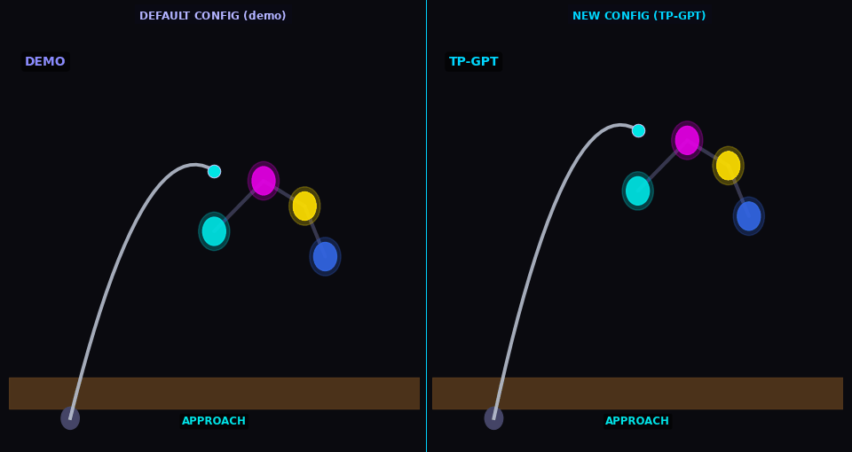

Generalization in action
One demonstration. Three tasks. Zero retraining.
Reshelving

TP-GPT transports pick-place policy to new object/goal positions
Cleaning

TP-GPT adapts cleaning path to shifted surface
Arm-pose

TP-GPT traces path through new arm configuration

Three tasks · Single demonstration each · Franka Panda arm · MuJoCo kinematic simulation